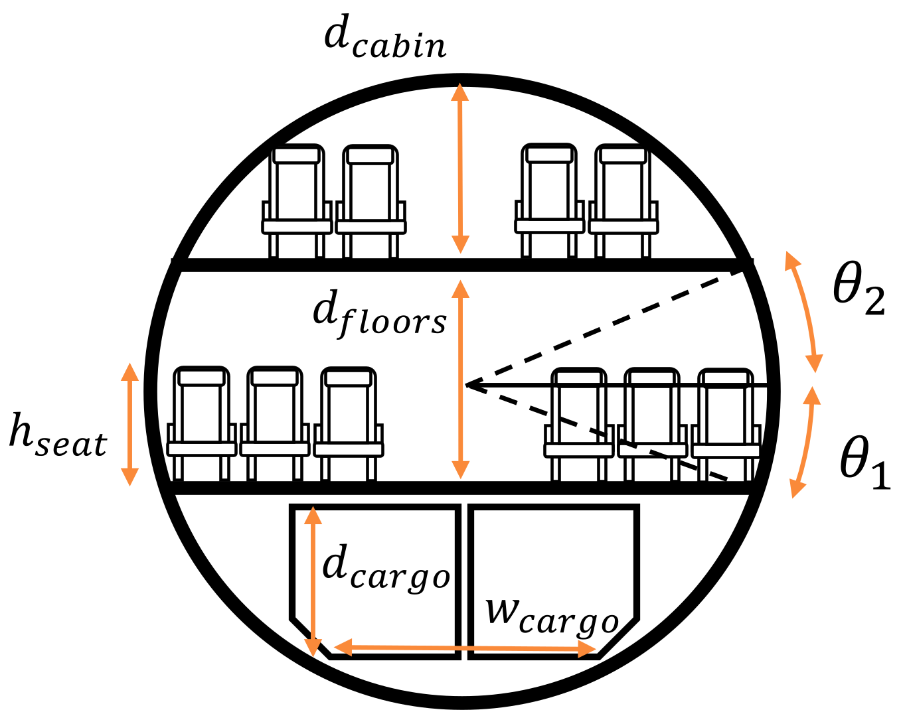

Cabin sizing
When creating an aircraft input file, the fuselage geometry has to be specified (i.e., the pressure vessel start and end locations, cylindrical portion start and end locations and radius, guesses for the wing and tail). The user is given the option to resize the fuselage if, for example, these parameters are not known or if the radius is to be optimized. This can be accomplished via structures.update_fuse_for_pax!().
Theory
📖 Theory - Cabin sizing
The TASOPT input file requires the user to specify a radius and general fuselage layout, including the start and end of the pressure vessel, and the start and end of the cylindrical portions. Whether this provided layout is used or not depends on the flag calculate_cabin_length in the Fuselage.Geometry input field: this flag is False by default, implying that the fuselage length and layout does not get recalculated for the input radius. However, if the flag is set to True, the function structures.update_fuse_for_pax!() is used to update the fuselage length and layout to accommodate the desired number of passengers.
To resize the fuselage, information about the number of passengers and seat properties are needed. The number of passengers used the resize the fuselage is set in the input file as exit_limit in Mission; this is assumed to be the maximum number of people that could fit in the cabin in an all-economy layout. The goal then is to determine the minimum cabin length corresponding to the specified radius and seat properties: seat pitch, width and height. Two key functions are used for this purpose:
structures.find_floor_angles(): This function aims to determine the angular placement of the cabin floor inside the fuselage cross-section. If the cabin has a single deck, this is the angle that maximizes the cabin width. If the aircraft is a double-decker, the main (lower) cabin could be at any angle; the main-cabin angle must then be specified so that the upper-cabin angle can be calculated from the cabin height. The double-decker geometry problem is more involved and is described in the subsequent section.structures.find_cabin_width()If the fuselage has a single deck, the angular position of the cabin floor is then used by the following function to calculate the maximum width corresponding to that section. For example, if the seat height is 0, the angular placement would be 0 and the maximum width of a single bubble fuselage is $2R_{fuse}$. When the seat height is greater than 0, the effective cabin width is the distance between the top or bottom of the seats in the cabin, whichever is smallest.
Once the geometric properties of the floor and cabin width have been determined, the seats are placed in the cabin so as to determine the total cabin length. A 10 ft offset from the front of the cabin is assumed. First, the number of seats abreast is determined by structures.findSeatsAbreast(). This function assumes an aisle width of 20 inches and a fuselage offset of 6 inches, as seats do not start at the edge of the fuselage. Once the number of seats abreast is known, the number of rows is calculated from the exit-limit number of passengers and the cabin length is calculated from the seat pitch, taking emergency exits into account.
When the cabin length has been determined, the structures.update_fuse_for_pax!() proceeds to update the position of all the structural elements that have to be specified by the user, such as the cylinder and pressure vessel ends, horizontal and vertical tail placements, etc. To do this, the relative distances between these elements specified by the user are maintained. For example, the distance from the end of the fuselage to the horizontal and vertical tails is the same in the resized aircraft as in the user-defined parameters.
📖 Theory - Double-decker aircraft
When the cabin has two decks, determining the best layout is more involved as the position of the lower floor and the passenger split between the lower and upper cabins is not known in advance. In TASOPT, this is solved as an optimization problem: the optimization variables are the number of passengers in the lower cabin and the lower-cabin floor angle. The geometry of the cabin is shown in the figure below.

The objective function to be minimized is the cabin length, which is the maximum of the lengths of the upper and lower cabins. An optimal design is expected to be one in which both cabins have similar lengths. Constraints are applied on the minimum cargo bay height, $d_{cargo}$, and on the minimum height of the upper cabin, $d_{cabin}$ (by default 2 m). The available cargo bay height is calculated so that it can fit the width of a standard unit load device. The objective function is structures.find_double_decker_cabin_length(), which returns the maximum of the lengths of either cabins (which is used as the objective function), and the number of seats abreast in the main cabin for a later check (ignored in the optimization process). The optimization is done using the NLopt.jl optimization suite via structures.optimize_double_decker_cabin().
Since there are only two optimization variables, this function uses the GN_AGS global optimizer. Once the minimum cabin length has been determined, the fuselage and component layouts get updated in structures.update_fuse_for_pax!() as in the single deck case.
📖 Theory - Fuselage radius from seats abreast
In some circumstances, it may be of interest to calculate the minimum fuselage radius that results in a given number of seats abreast. If multiple fuselage radii are being tested, it is likely that the ones providing best performance are those with the narrowest cabin for a given number of seats abreast (and therefore cabin length).
In TASOPT, this problem is solved as an optimization problem: the goal is to find the minimum fuselage radius such that the seats abreast in the main cabin are exactly equal to the desired number. This is done with structures.find_minimum_radius_for_seats_per_row()(@ref).
In this function, two optimizers are used. First, the global optimizer GN_DIRECT is used to find the approximate location of the solution with up to 500 function evaluations. This optimizer cannot handle equality constraints directly; instead, the constraint is introduced with a penalty function. The objective function is simply
\[f = R_{fuse}+10^3 \Delta s,\]
where $\Delta s$ is the difference between the desired and actual seats per row for a given radius. The function that computes this difference for a given radius is structures.check_seats_per_row_diff(). ```
Once the approximate solution has been found, a local optimizer LN_NELDERMEAD is used to polish off the solution at a lower computational cost. Finally, the solution is checked to verify it meets the equality constraint.
Functions
TASOPT.structures.update_fuse_for_pax! — Function
update_fuse_for_pax!(ac)Function to update the fuselage layout when the cabin length is not known a priori, for example if the radius is changed. It sizes the cabin for the design number of passengers.
TASOPT.structures.find_floor_angles — Function
find_floor_angles(is_doubledecker::Bool, Rfuse::Float64, dRfuse::Float64; θ1::Float64 = 0.0, h_seat::Float64 = 0.0, d_floor::Float64 = 0.0)This function can be used to place the passenger decks inside the fuselage. It works for single deck or double decker cabins. It returns the angular position of each deck with respect to the center of the upper bubble.
🔃 Inputs and Outputs
Inputs:
is_doubledecker::Bool: flag to indicate whether aircraft is a double deckerRfuse::Float64: fuselage exterior radius (m)dRfuse::Float64: vertical shift of downward bubble (m)θ1::Float64: required in some cases; angle of main floor wrt upper bubble center (rad)h_seat::Float64: required in some cases; seat height (m)d_floor::Float64: required in some cases; distance between double decks (m)
Outputs:
θ1::Float64: angle of main floor wrt upper bubble center (rad)θ2::Float64: returned when double decker; angle of upper floor wrt upper bubble center (rad)
TASOPT.structures.find_cabin_width — Function
find_cabin_width(Rfuse::Float64, wfb::Float64, nfweb::Int64, θ::Float64, h_seat::Float64)This function can be used to calculate the width of the passenger cabin from the double-bubble parameters and the floor angular position.
TASOPT.structures.findSeatsAbreast — Function
findSeatsAbreast(cabin_width,
seat_width = 19.0*in_to_m, aisle_halfwidth = 10.0*in_to_m, fuse_offset = 6.0*in_to_m)Function to find the number of seats abreast that can fit in a given cabin width.
🔃 Inputs and Outputs
Inputs:
cabin_width::Float64: width of cabin (m).seat_width::Float64: width of one seat (m).aisle_halfwidth::Float64: half the width of an aisle (m).fuse_offset::Float64: distance from outside of fuselage to edge of closest window seat (m).
Outputs:
seats_per_row::Float64: number of seats per row.
TASOPT.structures.find_double_decker_cabin_length — Function
find_double_decker_cabin_length(x::Vector{Float64}, parg, fuse)This function can be used to calculate the length of a double decker cabin with different number of passengers on each deck.
🔃 Inputs and Outputs
Inputs:
x::Vector{Float64}: vector with optimization variablesparg::Vector{Float64}: vector with aircraft geometric and mass parametersfuse::Fuselage: structure with fuselage parameters
Outputs:
maxl::Float64: required cabin length (m)pax_per_row_main::Float64: number of seats abreast in lower cabin
TASOPT.structures.optimize_double_decker_cabin — Function
optimize_double_decker_cabin(fuse)This function can be used to optimize the deck layouts and passenger distribution in a double decker aircraft.
TASOPT.structures.find_minimum_radius_for_seats_per_row — Function
find_minimum_radius_for_seats_per_row(seats_per_row, ac_base)This function calculates the minimum radius required to have a desired number of seats per row in the main cabin.
TASOPT.structures.check_seats_per_row_diff — Function
check_seats_per_row_diff(seats_per_row, x, ac)This function returns the difference between the desired number of seats per row and the one corresponding to a given radius
🔃 Inputs and Outputs
Inputs:
seats_per_row::Float64: desired number of seats per row in main cabin (lower deck if double decker)x::Vector{Float64}: vector with one entry containing the fuselage radius (m)ac::aircraft: aircraft object
Outputs:
diff::Float64: difference between desired number of seats per row and that for the input radius